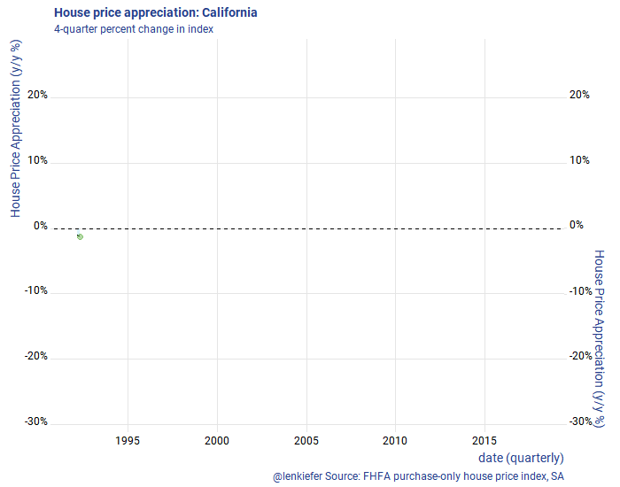

I am headed out west, to California to talk housing at the Western Secondary Market Conference. After my talk they might post my slides online somewhere. If they do I’ll link to them, but for now you can get a preview in this twitter thread.
Like many western states, California is facing a imbalance between housing supply and housing demand. Strong economic growth has bolstered demand, but supply has not kept up. The result is an acceleration in house prices.
In this post, let’s examine some recent trends in the California house prices.
Per usual I’ll make charts with R and you can too with the code.
Load Libraries:
suppressMessages(
{
# Load libraries ----
library(tidyquant)
library(tidyverse)
library(lubridate)
library(data.table)
library(ggridges)
library(extrafont)
}
)Get some data:
suppressMessages( {
# Get house price data ----
df.hpi<-fread("https://www.fhfa.gov/DataTools/Downloads/Documents/HPI/HPI_master.csv")
df.hpi <- mutate(df.hpi,date=as.Date(ISOdate(yr,period*3,1)))
df.hpi <- df.hpi %>% group_by(level,place_name) %>% mutate(hpa=index_sa/lag(index_sa)-1,
hpa4 = index_sa/lag(index_sa,4)-1) %>% ungroup()
# list of CA index
# use grepl("CA",unique(df.hpi$place_name)) to find California
df.ca <- filter(df.hpi,grepl("CA",place_name)| place_name=="California" , hpi_type=="traditional", hpi_flavor=="purchase-only")
df.us <- filter(df.hpi, place_name=="United States", hpi_type=="traditional",hpi_flavor=="purchase-only", frequency=="quarterly")
})House price trends
Let’s look at house price trends in Califonia. First, let’s compare California to the United States.
ggplot(data= df.ca %>% filter(level=="State"), aes(x=date,y=index_sa,group=place_name))+
geom_line(color=rgb(103,180,75, maxColorValue = 256), size=1.05)+
geom_text(data=. %>% tail(1), aes(label="CA"),color=rgb(103,180,75, maxColorValue = 256),fontface="bold",nudge_y=5)+
geom_line(data=df.us %>% select(date,index_sa), aes(group="CA"),linetype=2, color=rgb(9, 177,240, maxColorValue = 256),size=1.05)+
geom_text(data=df.us %>% select(date,index_sa) %>% tail(1), aes(group="CA",label="US"),nudge_y=-5, color=rgb(9, 177,240, maxColorValue = 256))+
theme_ridges(font_family="Roboto")+
theme(text = element_text(color = "#27408b"))+
labs(y="House Price Index: 1991Q1=100",x="date (quarterly)",
title="House price index: CA vs US",
caption="@lenkiefer Source: FHFA purchase-only house price index, SA")
The above chart is in levels, how about we compare the 4-quarter percent changes?
ggplot(data= df.ca %>% filter(level=="State",year(date)>1991), aes(x=date,y=hpa4,group=place_name))+
geom_line(color=rgb(103,180,75, maxColorValue = 256), size=1.05)+
geom_text(data=. %>% tail(1), aes(label="CA"),color=rgb(103,180,75, maxColorValue = 256),fontface="bold",nudge_y=.01)+
geom_line(data=filter(df.us,year(date)>1991) %>% select(date,hpa4), aes(group="CA"),linetype=2, color=rgb(9, 177,240, maxColorValue = 256),size=1.05)+
geom_text(data=df.us %>% select(date,hpa4) %>% tail(1), aes(group="CA",label="US"),nudge_y=-.01, color=rgb(9, 177,240, maxColorValue = 256))+
theme_ridges(font_family="Roboto")+
scale_y_continuous(labels=scales::percent)+
theme(text = element_text(color = "#27408b"))+
labs(y="4-quarter % change",x="date (quarterly)",
title="House price appreciation: CA vs US",
subtitle="4-quarter percent change in index",
caption="@lenkiefer Source: FHFA purchase-only house price index, SA")
California is a huge state. How do house price trends compare across metros?
ggplot(data= df.ca %>% filter(level=="MSA",year(date)>1991), aes(x=date,y=index_sa,group=place_name))+
geom_line(color=rgb(103,180,75, maxColorValue = 256), size=1.05)+
geom_line(data=df.ca %>% filter(level=="State",year(date)>1991) %>% select(date,index_sa), aes(group="CA"),linetype=2, color=rgb(9, 177,240, maxColorValue = 256),size=1.05)+
theme_ridges(font_family="Roboto")+
theme(text = element_text(color = "#27408b"),strip.text=element_text(size=7))+
labs(y="House Price Index: 1991Q1=100",x="date (quarterly)",
title="House price index", subtitle="Solid line metro, dotted line CA",
caption="@lenkiefer Source: FHFA purchase-only house price index, SA")+
facet_wrap(~place_name,ncol=3)
We see quite a bit of variation across metros. How do metros compare in terms of 4-quarter (annual) house price growth in the most recent data?
ggplot(data=filter(df.ca,date==max(df.ca$date)), aes(x=forcats::fct_reorder(place_name,hpa4),y=hpa4,color=level))+
scale_color_manual(name="Level", values=c(rgb(103,180,75, maxColorValue = 256),rgb(9, 177,240, maxColorValue = 256) ))+
geom_segment(aes(yend=0,xend=place_name))+
geom_point(size=3)+
coord_flip()+scale_y_continuous(labels=scales::percent, expand=c(0,0.001),limits=c(0,.175))+
geom_text(aes(label=scales::percent(round(hpa4,3))), hjust=0,nudge_y=0.0035)+
theme_ridges(font_family="Roboto")+
theme(text = element_text(color = "#27408b"),legend.position="bottom")+
labs(y="4-quarter % change",x="Area",
title="House price appreciation: 2018Q1",
subtitle="4-quarter percent change in index",
caption="@lenkiefer Source: FHFA purchase-only house price index, SA")
Make Animations
Let’s make an animated line plot.
First, let’s make a line plot. The code below generates a static plot.
library(animation)
library(tweenr)
dfp <- filter(df.ca,level=="State",year(date)>1991) %>% select(date,hpa4) %>% mutate(day=1+(row_number()-1)*7, ease="linear", rate_label=as.factor(as.character(round(hpa4,0))))
plot_data_tween<-tween_elements(dfp, time = "day", group="ease",
ease="ease", nframes = nrow(dfp)*2)
df_tween_appear <- tween_appear(plot_data_tween, time='day', nframes = nrow(dfp)*2)
make_plot_appear <- function(i){
p <-
ggplot(data=df_tween_appear, aes(x=date,y=hpa4))+
geom_area(data= .%>% filter(.frame==i, .age> -3.5), color=NA, fill=rgb(9, 177,240, maxColorValue = 256),alpha=0.15 ) +
geom_line(alpha=0)+
geom_hline(yintercept=0, linetype=2)+
geom_line(data= .%>% filter(.frame==i, .age> -3.5) ) +
geom_point(data= .%>% filter(.frame==i, .age> -3.5) %>% tail(1), color=rgb(103,180,75, maxColorValue = 256), size=3, alpha=0.5)+
theme_ridges(font_family="Roboto")+
scale_y_continuous(labels=scales::percent, sec.axis=dup_axis())+
theme(text = element_text(color = "#27408b"))+
labs(y="House Price Appreciation (y/y %)",x="date (quarterly)",
title="House price appreciation: California",
subtitle="4-quarter percent change in index",
caption="@lenkiefer Source: FHFA purchase-only house price index, SA")
return(p)
}
make_plot_appear(max(df_tween_appear$.frame))
Then we can use the animation packaged to animate.
oopt<-ani.options(interval=1/20)
saveGIF({for (i in 1:max(df_tween_appear$.frame)){
g<-
make_plot_appear(i) +
geom_hline(yintercept=0, linetype=2)
print(g)
print(paste(i,"out of",max(df_tween_appear$.frame)))
ani.pause()
}
for (ii in 1:2){
print(g)
ani.pause()
}
}, movie.name = "YOURDIRECTOR/hpa.gif", ani.width=700, ani.height=600,scale=1.2) #set YOURDIRECTORY to where you want to save the file